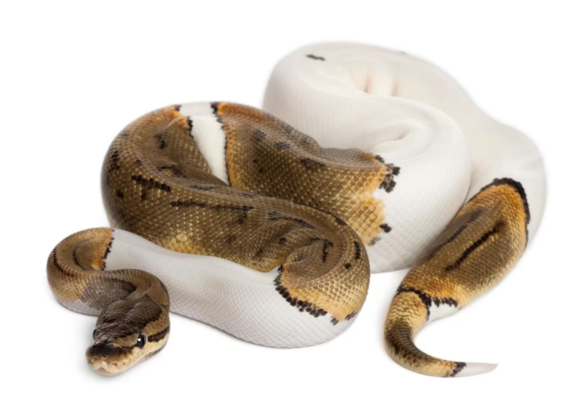

Introduction
Ball pythons are a very popular pet snake due to their manageable size, docile nature, and beautiful variety of patterns. They are native to sub-Saharan Africa and are known for their tendency to curl into a ball when threatened. This guide is an intro into the basics of caring for a ball python, including enclosures, feeding, and handling.

Enclosure
When designing a home for your new ball python, it's important to have their comfort and security at the forefront of your decision making. A snake that feels uncomfortable or unsafe in their environment will be very stressed and could lead to issues like striking or refusing to eat. You will need to decide what type of enclosure to get, how to keep it properly heated and humid, and what to put in it. This will include the substrate you decide to use, your snake's hides, lights, enrichment items, etc. And of course, a water dish with freshly changed water every few days.
Feeding
Ball pythons can be tricky eaters at times, even refusing to eat for months when they're uncomfortable, so it’s important to feed them a proper diet to keep them healthy. The important things to keep in mind when feeding are the size and age of your snake (which determines the size, age, and type of prey item), whether you're feeding live or frozen-thawed, and how often to do so. Most keepers recommend a frozen-thawed rat whose weight is about 15% of your snakes body weight.
Handling
Building trust with your new snake is usually a very slow, but rewarding process. When you first bring them home, leave them be for about a week to settle in, then you can start with short 15 min handling sessions one a day or every other day to help get them used to you. You can also spend a lot of time near their enclosure to get them used to you without the stress of being picked up. Make sure to read their body language and you can increase session times as the snake becomes fully comfortable with you. Make sure you don't handle your snake during shed or while they're digesting.